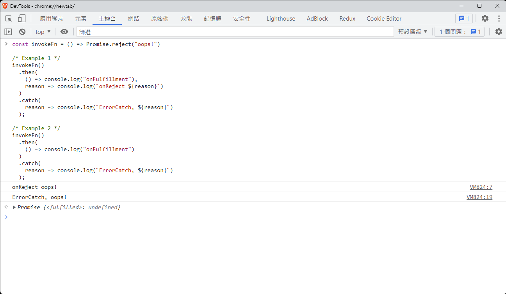
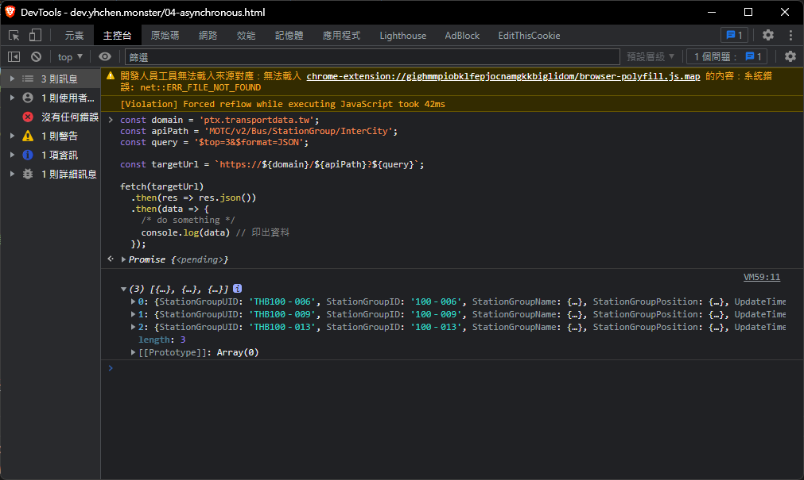

非同步程式設計
一個簡單的例子,說明一下"非同步"的情境
在假日起床後,你打算做以下幾件事情：
- 刷牙洗臉 (5分鐘)
- 洗衣服 (1小時15分鐘)
- 上廁所 (15分鐘)
- 享用早餐 (25分鐘)
一早起來先盥洗後,放下衣服去洗,上個廁所,然後享用早餐
在"同步"的情況下,會發生以下的狀況：
當盥洗後去洗衣服時,即使肚子餓了也不能用早餐；亦不能去上廁所,因為洗衣服是個阻塞事件
換句話說,當執行一個 Task,且該 Task 不可被中斷 (阻塞 Block),就可以粗略地說是同步程式
實際上的情況會更加複雜,因為會區分為：
- 同步 (Synchronize)
- 非同步 (Asynchronize)
- 阻塞 (block)
- 非阻塞 (non-block)
這裡不討論太深入,先理解第一個概念：
現實中的狀況
在生活中,也有很多非同步的情境：
- 以上個例子來說,當把衣服丟進洗衣機洗後,就會離開做其他事情了
- 煮泡麵時,通常不會倒水後,還繼續等待三分鐘都不做其他事情
- 去銀行時,先抽取號碼牌,等到輪到自己的號碼,才去櫃檯
試想一下上面的幾個情境：洗衣服時,要在洗衣機旁等待1小時；去銀行時,要在櫃台排隊直到自己到櫃檯前...
這些都是很浪費時間的情況,而以程式設計來說,通常非同步設計會用在
- I/O 發生時(非常重要)
- 某個操作耗費時間甚鉅
若 CPU 進行資料的運算需要 10µs,而等待硬碟把資料傳輸到記憶體需要 1 ms
客觀來說,耗時約為 1ms + 10µs = 1.01ms；對於CPU來說,絕大多數的時間都在等待資料傳輸
對於網頁設計來說,經典的例子是：當網頁上有圖片需要顯示時,不會等待圖片下載完成,而是會先渲染頁面的其餘部分
AJAX
政府有提供一系列的開放資料,可供查詢運輸的相關資料：MOTC API
這剛好符合即將要做的事情：透過網路從遠端取得一些資料
經由 MOTC 的 API：https://ptx.transportdata.tw/MOTC/v2/Bus/StationGroup/InterCity?$top=3&$format=JSON 可以得到以下的資料：
| 識別碼 | 站點代碼 | 站點名稱 | 經度 | 緯度 | 更新時間 |
|---|---|---|---|---|---|
| THB100－006 | 100-006 | 台電大樓 | 121.53 | 25.01 | 2022-07-31T07:15:28+08:00 |
| THB100－009 | 100-009 | 仁愛新生路口 | 121.53 | 25.03 | 2022-07-31T07:15:28+08:00 |
| THB100－013 | 100-013 | 捷運忠孝新生站 | 121.53 | 25.04 | 2022-07-31T07:15:28+08:00 |
倘若是將該表格做成網頁,內容可能會是：
<html>
<body>
<div>
<!-- 其他資料 -->
</div>
<table>
<thead>
<tr>
<th>識別碼</th>
<th>站點代碼</th>
<th>站點名稱</th>
<th>經度</th>
<th>緯度</th>
<th>更新時間</th>
</tr>
</thead>
<tbody>
<tr>
<td>THB100－006</td>
<td>100-006</td>
<td>台電大樓</td>
<td>121.53</td>
<td>25.01</td>
<td>2022-07-31T07:15:28+08:00</td>
</tr>
<tr>
<td>THB100－009</td>
<td>100-009</td>
<td>仁愛新生路口</td>
<td>121.53</td>
<td>25.03</td>
<td>2022-07-31T07:15:28+08:00</td>
</tr>
<tr>
<td>THB100－013</td>
<td>100-013</td>
<td>捷運忠孝新生站</td>
<td>121.53</td>
<td>25.04</td>
<td>2022-07-31T07:15:28+08:00</td>
</tr>
</tbody>
</table>
<div>
<!-- 其他資料 -->
</div>
</body>
</html>
這個假設的網頁,可能還包含了該表格以外的資料,使用 <!-- 其他資料 --> 替代,
假設上面的表格是會更新的(Ex. 每 30 分鐘一次),每次都需要重新要求整個頁面,是很浪費效能的
因為用戶只關心會變化的資料,比方說上面的表格
在之後,會說明什麼是RestAPI,首先知道：
早期的實現
在過去 YAHOO 帳號還很流行的時候,許多人都會去辦一組信箱：
流程如下：
- 輸入一個帳號名稱
- 輸入你的姓名、基本資料
- 送出表單
- 喔,你有可能帳號名稱跟別人重複了、或是密碼不符合格式(比方說要包含大小寫英數字)
- 重新填寫表單
在隨後幾年(2010),Google進入大家的生活,同樣的流程：
- 輸入一個帳號名稱
- 準備輸入你的姓名、基本資料
- 已經知道該帳號有沒有被註冊過了
- 繼續填寫其他項目
- 若表單有錯誤,進行修正
- 提交申請表單
這在現今很常見的技術,由 Google 開始大量使用的技術之一 - AJAX
早在 Google 使用該方法之前,早就有這項技術,叫做 Asynchronous JavaScript And XML(AJAX)
平常使用的網頁,其實大部分的畫面是固定的,僅有一小部分會變化,比方說：
- 圖書館館藏系統：只有搜尋結果的部分會改變
- 帳號註冊系統：表單都是一樣的,只是要檢查帳號、密碼合不合格
- Youtube：搜尋影片時,只有下方的影片清單會改變
諸多應用,因此提出一個概念：能不能只交換需要的部分？,或是先提交部分資料給伺服器進行處理
因為早期使用XML做為資料傳輸的格式(近幾年大部分使用JSON),所以稱為AJAX
概念如下：透過背景發起Network I/O,並等到伺服器回應後,再把資料取出來使用,實現的程式碼如下
const domain = 'ptx.transportdata.tw';
const apiPath = 'MOTC/v2/Bus/StationGroup/InterCity';
const query = '$top=3&$format=JSON';
const targetUrl = `https://${domain}/${apiPath}?${query}`;
let xhr = new XMLHttpRequest();
/* xhr.open(method, url) 以特定的HTTP方法開啟某個網址 */
xhr.open('get', targetUrl);
/* 當資料完成後,要做什麼事情 */
xhr.onload = function(e) {
console.log(xhr.responseText);
}
/* 接近等效的程式碼：
xhr.addEventListener('load', e => {
console.log(xhr.responseText);
}) */
/* 送出請求 */
xhr.send();
看到 onload 成員,當完成後,會發送一個事件,通知程式去把資料取出來
現在的主流做法
在ES 6(ECMA 2016)之後,推出了一系列的API,其中包含影響甚鉅的 Promise
而ES 7之後,則推出了 async/await ,更方便進行處理非同步的資料
Promise
Promise 的含意是：一個未來的值,且狀態決定之後,絕對不會改變
用實際的例子來說明,首先是 Promise 的函式簽章：
function executor( resolve, reject ) {
/* do something */
}
let promise = new Promise( executor );
executor 的型別是 Function,並接受兩個參數 resolve 和 reject,兩個參數都是 function
resolve：當操作成功,應該調用該方法
reject：當操作失敗,應該調用該方法
在部分程式設計書籍的說法,傳入一個Function,被傳入的Function習慣稱做 callback 或是 handler
並且稱接受/回傳一個Function的Function 為 High-order Function(高階函式)
以該例中：
function calc( callback ) {
let a = Math.random() * 100;
let b = Math.random() * 100;
return callback(a, b);
}
function add(a, b) {
return a + b;
}
function mul(a, b) {
return a * b;
}
calc(add) // return `Math.random() * 100` + `Math.random() * 100` 的值
calc(mul) // return `Math.random() * 100` * `Math.random() * 100` 的值
呼叫 calc 時,calc內部會生成兩個隨機數字 a, b,並調用 callback 參數,該參數接受一個 Function
add 和 mul 這兩個被傳入的 function,通常叫做 callback
另一個例子,滑鼠點擊事件的函數簽章：
htmlElement.addEventListener('click', e => {
console.log(e);
})
addEventListener 接收兩個參數：第一個是事件種類,常用的有 click, change, load ... 等
第二個參數則是一個 handler, 把事件物件傳給 handler, 供 handler使用
那麼回到 Promise, 可以理解成 Promise 內部會生成兩個 callback 供使用
根據調用的 callback, 決定 Promise 的狀態是成功的還是失敗的：
let promise = new Promise((resolve, reject) => {
const value = Math.random() * 1000;
if(value > 500)
resolve(value);
else
reject(value);
});
new Promise 回傳的實例, 會提供 then 或是 catch 方法,分別對應 resolve 和 reject ：
promise
.then(value => console.log(value)) // 當 resolve 被調用時,進入該函式
.catch(value => console.log(value)); // 當 reject 被調用時,進入該函式
這樣理解Promise：一個未來會存在的數值, 且狀態確定後, 就不會改變了
狀態不會改變的意思是：
let promise = new Promise((resolve, reject) => {
const flag = true;
resolve(true);
reject(false); // 無效,已經呼叫了 resolve
});
promise
.then(value => console.log(value)) // print 'true';
.catch(value => console.log(value)) // 不會執行
這個就是 Promise 不變性的意思：
- 一開始處於 pending 狀態：還未調用
resolve或是reject之前, 都處於該狀態 - 當 resolve 調用後：成為 fulfilled(實現) 狀態
- 當 reject 調用後：成為 rejected(拒絕) 狀態
Promise 一旦被決定是 fulfilled 還是 rejected 後, 就不會變成其他狀態了
而 Promise 只會被決定一次狀態,意思是：
let promise = new Promise((resolve, reject) => {
const flag = true;
resolve(true); // 在該階段,Promise 成為 fulfilled 狀態
resolve(false); // 無效,Promise的狀態已經被決定了
});
而 then 和 catch 的回傳值,會成為下一個 Promise 的值：
let promise = new Promise((resolve, reject) => {
resolve(10); // 必定會成功的 Promise
});
promise
.then(value => {
console.log(value); // print 10
return value * 100
})
.then(value => {
console.log(value); // print 1000
});
且 Promise 有個特性：他可以類似串列一般,把本次的回傳值做為下一個promise的傳入
let promise = new Promise((resolve, reject) => {
const flag = Math.random() > 0.5; // Math.random() 會隨機回傳 0~1 之間的數字
if(flag) {
resolve(1,2,3,4,5) // 僅接受第一個參數
} else {
reject(10,20,30) // 僅接受第一個參數
}
});
promise
.then((a,b,c,d,e) => {
console.log(a,b,c,d,e); // print 1, undefined * 4
return 100;
})
.catch((a,b,c) => {
console.log(a,b,c); // print 10, undefined * 2
return -100;
})
.then( value => {
// 如果 flag 為 true,代表進入上一個 then,此時 value = 100
// 反之 flag 為 false,代表進入上一個 catch,此時 value = -100
console.log(value);
return 10000
})
.finally(e => {
// 可以調用 finally(),代表不論在 then 還是 catch 都要執行的事件
console.log(e) // undefined,finally不接受任何參數
})
Promise的出現,為帶來了一個重要的進展 - 可以針對非同步事件進行排序
以上個個章節的例子,要下載 fileA, fileB, fileC,且一定要依照A B C的順序
在上個章節,用arr[0]、arr[1]、arr[2]分別存入A、B、C的值,但是使用 Promise 後,可以改為：
function download(url) {
return new Promise( (resolve, reject) => {
const xhr = new XMLHttpRequest();
xhr.open('get', url);
xhr.addEventListener('load', () => {
resolve(xhr.responseText) // 下載完成後,調用 resolve
})
xhr.addEventListener('error', e => {
reject(e.message) // 若失敗,調用 reject
});
xhr.send() //送出請求
})
}
function downloadAll() {
download(siteA)
.then(data => {
console.log(data);
return download(siteB);
})
.then(data => {
console.log(data);
return download(siteC);
})
.then(data => {
console.log(data);
});
}
downloadAll() //依序呼叫 siteA、siteB、siteC 的下載內容
更深入的 Promise

這裡引用 MDN 的 Promise 流程圖：起初在 pending 狀態,接下來根據 fulfill 或是 reject,調用 onFulfillment 或是 onRejection,此時就被稱為 settled 狀態
值得注意的地方是,可以看到其實 then() 是可以接受兩個 callback：
const invokeFn = () => Promise.reject("oops!")
/* Example 1 */
invokeFn()
.then(
() => console.log("onFulfillment"),
reason => console.log(`onReject ${reason}`)
)
.catch(
reason => console.log(`ErrorCatch, ${reason}`)
);
/* Example 2 */
invokeFn()
.then(
() => console.log("onFulfillment"),
)
.catch(
reason => console.log(`ErrorCatch, ${reason}`)
);

在舊一點的實作中, 會特意把 fulfill, reject, error 三種情況分開
Ex. 當呼叫伺服器的API時, 可能會發生：
200 OK- 伺服器收到請求並允許403 Forbidden- 伺服器收到請求並拒絕- 無回應 - 完全無回應, 可能是伺服器壞掉, 或是該站點根本不存在
對於客戶端來說, onFulfillment 對應到 status 200, onReject 對應到 status 403, 最後onCatchError 對應到伺服器無回應
- Promise.resolve(val) 回傳一個進入
fulfill狀態的 Promise 物件 - Promise.reject(val) 回傳一個進入
reject狀態的 Promise 物件
流程圖的第三階段,無論是 then 還是 catch 方法,都會會傳一個新的 Promise 物件
進階練習
這就如上方的 downloadAll 例子, 每一次的 then 都會回傳一個新的 Promise 物件, 且 Promise 只會被決定一次狀態, 因此可以提出兩種變體：
首先定義一個模擬下載 的Promise函式, 接受兩個值：val 以及 isSuccess
/* val 設定成當 Promise settled 時,應該回傳的值 */
/* isSuccess 則決定,該 Promise 的狀態是 `fulfill` 還是 `reject` */
const download = (val, isSuccess = true) => {
if(isSuccess) {
return Promise.resolve(`Fulfill: ${val}`);
} else {
return Promise.reject(`Reject: ${val}`);
}
}
download("data A")
/* stage 1 */
.then(data => {
console.log(`Savepoint 1: ${data}`);
return download("data B");
})
.catch(err => {
console.log(`Savepoint 2: ${err}`);
return download("error-data B");
})
/* stage 2 */
.then(data => {
console.log(`Savepoint 3: ${data}`);
return download("data C");
})
.catch(err => {
console.log(`Savepoint 4: ${err}`);
return download("error-data C");
})
/* stage 3 */
.then(data => {
console.log(`Savepoint 5: ${data}`);
})
.catch(err => {
console.log(`Savepoint 6: ${err}`);
})
簡單的拆解一下, 理清這個範例的執行結果：
在第一次呼叫 download 時,第二個參數 isSuccess 為 true,因此該次執行結果是 fulfill
download("data A") // fulfill
此時會經過 Savepoint 1,並印出 "Savepoint 1: Fulfill: data A"
下一行的 download("data B") 也是 fulfill,因此會略過 catch,進入到 stage 2 的 Savepoint 3,並印出 "Savepoint 3: Fulfill: data B"
同樣的,最後則會走到 stage 3 的 "Savepoint 5",並印出 "Savepoint 5: Fulfill: data C"
最終輸出：
Savepoint 1: Fulfill: data A
Savepoint 3: Fulfill: data B
Savepoint 5: Fulfill: data C
下面的例子, 把"看不到"的路徑, 先註解起來
download("data A") // <--- 目前執行的位置
/* stage 1 */
.then(data => { // <--- 最近的 then
console.log(`Savepoint 1: ${data}`);
return download("data B");
})
.catch(err => { // <--- 最近的 catch
console.log(`Savepoint 2: ${err}`);
return download("error-data B");
})
/* stage 2 */
// .then(data => {
// console.log(`Savepoint 3: ${data}`);
// return download("data C");
// })
// .catch(err => {
// console.log(`Savepoint 4: ${err}`);
// return download("error-data C");
// })
/* stage 3 */
// .then(data => {
// console.log(`Savepoint 5: ${data}`);
// })
// .catch(err => {
// console.log(`Savepoint 6: ${err}`);
// })
該次結果是成功,因此會進到 then,此時在 Savepoint 1：
// download("data A")
/* stage 1 */
.then(data => {
console.log(`Savepoint 1: ${data}`);
return download("data B"); // <--- 目前執行的位置
})
.catch(err => { // <--- 最近的 catch
console.log(`Savepoint 2: ${err}`);
return download("error-data B");
})
/* stage 2 */
.then(data => { // <--- 最近的 then
console.log(`Savepoint 3: ${data}`);
return download("data C");
})
// .catch(err => {
// console.log(`Savepoint 4: ${err}`);
// return download("error-data C");
// })
/* stage 3 */
// .then(data => {
// console.log(`Savepoint 5: ${data}`);
// })
// .catch(err => {
// console.log(`Savepoint 6: ${err}`);
// })
這次結果也是成功,因此會進到 then,此時在 Savepoint 3：
// download("data A")
/* stage 1 */
// .then(data => {
// console.log(`Savepoint 1: ${data}`);
// return download("data B");
// })
// .catch(err => {
// console.log(`Savepoint 2: ${err}`);
// return download("error-data B");
// })
/* stage 2 */
.then(data => {
console.log(`Savepoint 3: ${data}`);
return download("data C"); // <--- 目前執行的位置
})
.catch(err => {
console.log(`Savepoint 4: ${err}`);
return download("error-data C"); // <--- 最近的 catch
})
/* stage 3 */
.then(data => { // <--- 最近的 then
console.log(`Savepoint 5: ${data}`);
})
// .catch(err => {
// console.log(`Savepoint 6: ${err}`);
// })
最後的結果還是成功, 因此會進到 then,此時在 Savepoint 5：
修改範例, 比方說在 stage 1 的 then 扔出一個 Error：
download("data A")
/* stage 1 */
.then(data => {
console.log(`Savepoint 1: ${data}`);
throw "Something wrong" // <------- 加入該行
return download("data B");
})
.catch(err => {
console.log(`Savepoint 2: ${err}`);
return download("error-data B");
})
/* stage 2 */
.then(data => {
console.log(`Savepoint 3: ${data}`);
return download("data C");
})
.catch(err => {
console.log(`Savepoint 4: ${err}`);
return download("error-data C");
})
/* stage 3 */
.then(data => {
console.log(`Savepoint 5: ${data}`);
})
.catch(err => {
console.log(`Savepoint 6: ${err}`);
})
此時的輸出順序就會是
Savepoint 1: Fulfill: data A
Savepoint 2: Something wrong
Savepoint 3: Fulfill: error-data B
Savepoint 5: Fulfill: data C
更多資料請參考 MDN - Promise
fetch API
ES 6 提供了 fetch API, 就像是上面的 download 的實作, 只是是由瀏覽器提供的WebAPI：
const result = fetch(url, {
method, // HTTP Method, default 為 get
headers, // HTTP 表頭, default為null
body, // 內容, default為null
...moreOptions
});
result
.then(e => {
return e.json() //把資料以JSON格式解讀
})
.then(json => {
console.log(json)
});
這就是最常用來抓取伺服器資料的方法,比方說上面那個抓取政府運輸資料的程式可改為：
const domain = 'ptx.transportdata.tw';
const apiPath = 'MOTC/v2/Bus/StationGroup/InterCity';
const query = '$top=3&$format=JSON';
const targetUrl = `https://${domain}/${apiPath}?${query}`;
fetch(targetUrl)
.then(res => res.json())
執行結果 
如果請求的站點出現404 NOT FOUND, 那麼當次 fetch 的狀態是 fulfilled
因為 fetch 象徵的意義是對伺服器發出請求, 而不是取得資料, 而404 status一樣是伺服器的回傳結果
fetch("httpp://www.google.com")
.then(d => {
console.log(true);
})
.catch(err => {
console.log("Error")
}) //進入 catch
這個例子中,誤把 http 打成 httpp,一個未知的協定,因此無法發出請求
導致直接進入 catch 階段
const domain = 'ptx.transportdata.tw';
const apiPath = 'MOTC/v2/Bus/StationGroup/InterCity';
const query = '$top=3&$format=JSON';
const targetUrl = `https://${domain}/${apiPath}?${query}`;
fetch(targetUrl)
.then(res => {
return res.text(); // 這次不使用 json(),而是使用 text() 取得未 paese 的內容
})
.then(content => {
console.log(content);
return JSON.parse(content+'}');
})
.catch(err => {
// 會進入這裡,因為在 content 後加上 '}',導致無法順利解析成JSON格式
console.log("Parse error")
})
而上述的例子中,可以觀察到在 then 或是 catch 中 throw Error,會進入下個階段的 catch
更多資料請參考 MDN - fetchAPI
async 與 await
在前兩個章節, 了解了 Promise 的使用方法, 但是 Promise 的回傳值永遠都是 Promise
因此要使用fetch到的資料, 還是有點麻煩：
// Sol 1：在 promise 內部使用 data
fetch(url)
.then(res => res.json())
.then(data => {
useDataA(data);
});
// Sol 2：使用 setInterval,每隔一段時間檢查a的狀態
let a;
fetch(url)
.then(res => res.json())
.then(data => {
a = data;
});
function useDataA() {
// 每隔 300ms 檢查一次
const timer = setInterval(() => {
// a 就緒了,清除計時器
if(a) {
clearInterval(timer)
/* do something */
JSON.parse(a);
};
}, 300)
}
對於大多數開發人員, 從 event 轉移到 Promise 已經是很好的情況了
但是在 ES 7, 接續推出了 async function
async function add(a, b) {
return a + b;
}
let result = add(a, b);
console.log(a) // Promise object
可以在 function 前,加上async 關鍵字,指示該函式成為非同步函式
非同步函式有兩個特色：
- 回傳值永遠都是 Promise 物件
- 允許使用
await
回傳值永遠都是 Promise 物件的意思是, 不論 return 什麼值, async function 都會包裝成 Promise
async function add(a, b) {
return a + b;
}
let result = add(10, 20); // Promise Object, [[value]] = 30
result.then(value => console.log(value)) // print: 30
特色1: 指示某個function是非同步事件, 所以使用Promise封裝
重點是特色2
await 可以取出 Promise 最後的回傳值,比方說：
function return100() {
return new Promise((resolve, reject) => resolve(100));
}
// 正常使用：
return100()
.then(data => console.log(data)) // print 100
// 在 async function 中使用 await
async function get100() {
const result = await return100();
console.log(result) // print 100
}
async function 可以讓的非同步程式"看起來"像同步程式
如果以上面那個download A、B、C 的例子,就可以改成
function download(url) {
return fetch(url)
.then(res => res.text());
}
async function processData() {
const dataA = await download(siteA);
const dataB = await download(siteB);
const dataC = await download(siteC);
}
如上所示, processData的行為就像是同步程式
await 對應到 then 方法, 那麼 catch 呢？
直接使用 try { ... } catch { ... } 即可
async function processData() {
try {
const dataA = await download(siteA);
const dataB = await download(siteB);
const dataC = await download(siteC);
} catch {
console.log("Download Failed");
}
}
這就是 async/await 的使用方法
更多資料請參考 MDN - async function